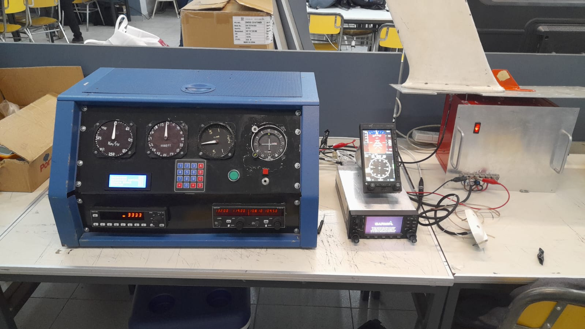

ONIET 2022
Con el proyecto Twin Otter concursamos en las Olimpiadas Nacionales de Innovacion, Electronica y Tecnologia aplicada (ONIET), organizada por la Universidad Blas Pascal en Córdoba. Nosotros participamos de la categoria prototipos II en la que obtuvimos el segundo lugar. El proyecto presentado en las olimpiadas no fue exactamente el mismo que el Twin Otter, ya que por temas de logistica no podiamos trasladar la cabina hasta Córdoba, entonces se nos ocurrio hacer una version reducida de la misma, la cual por ejemplo dentro del colegio se podia trasladar de un aula a otra. Esta nueva version consistia en una estructura metalica, la cual contaba con instrumentos de navegacion y comunicacion de la aeronave.
